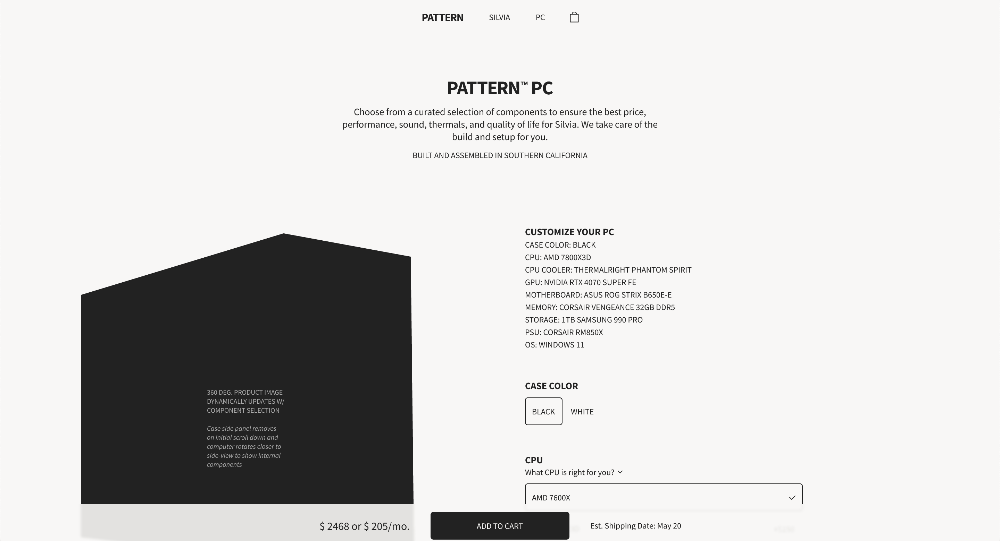

Pattern
 View Figma Design FileProject Overview
Challenge
Design UI/UX for a conceptual digital small business that manufacturers and sells a computer case as well as offers a custom PC building service using curated 3rd-party components.
Audience
Consumers building a new PC, upgrading their current PC, or in the market for a prebuilt PC. Specifically, gamers, content creators, hobbyists, and professionals whose work is dependant on a powerful PC.
Goal
Design a responsive e-commerce website focused on user task flows and aesthetic and minimalist design to establish Pattern's brand identity and best fulfill their business processes.
Role
Individual Project, UI/UX Designer
Execution
Design Thinking Process: Empathize, Define, Ideate, Prototype, Test
Tools
Figma, Google Docs
1. Empathize
User Personas
Ana
Age: 26 years old
Education: B.A. Filmmaking
Occupation: Editor
Location: Santa Cruz, CA
Bio
Ana is a video editor looking to upgrade from her laptop to a more powerful desktop PC to better handle her video editing work. She values reliability, performance, low noise, premium construction, and a sophisticated appearance. She has no experience building computers and is not an enthusiast.
Goals
- Find a sophisticated, premium, and high-performance PC
- Find a brand that she can identify with as a professional.
- Purchase a pre-built PC to save her the hassle of choosing parts and building it herself.
Frustrations
- Nervous to build and set up a computer herself
- Unsure which parts are good value and overwhelmed with options
- Limited options for sophisticated PCs and brands
Emma
Age: 28 years old
Education: B.S. Computer Sci.
Occupation: Software Developer
Location: Seattle, WA
Bio
Emma is a software developer, casual gamer, and PC enthusiast. She enjoys staying up to date on the latest hardware and is always on the lookout for new, unique, aesthetic, and high performing cases. She has built two PCs in the past and is looking to purchase a new case for her next build.
Goals
- Purchase a new case that is aesthetic and performs well
- Purchase individual, unassembled components
- Find detailed product specifications to ensure compatibility between case and components
Frustrations
- Limited availability of cases she likes that perform well and aren't too big for her desk
User Stories
Ana: As a video editor and first-time PC customer, I want to purchase a custom PC from the company that makes the case I like, so that I have help choosing parts which fit my budget and I don't have to build the computer myself.
Emma: As a software developer, casual gamer, and PC enthusiast, I want to purchase a stand-alone computer case, so that I can save money, choose each part, reuse old parts, and build the PC myself.
2. Define
Problem Statements
Ana is a professional and non-enthusiast who needs to purchase a plug-and-play PC that matches her professional working environment because she values aesthetics, is nervous to build a computer herself, and is unsure about which components offer the best price-performance and quality of life.
Emma is a pc-enthusiast who needs to purchase a stand-alone computer case for her new PC build because she enjoys building computers and wants to save money, choose each component, and reuse components from her last build.
Hypothesis Statements
Ana needs an e-commerce website that allows her to configure a prebuilt computer from a curated list of PC components that offer best value for her individual budget.
Emma needs an e-commerce website that sells a stand-alone computer case and provides detailed images and specifications on dimensions and hardware compatibility so she can plan and execute her build.
Goal Statements
The e-commerce website will let users configure a PC from a curated list of components which will affect non-enthusiasts by helping to narrow their options to the best value and quality of life components within their budget and hardware requirements as well as take care of the build and set up process for them. Effectiveness will be measured by amount of PC's sold.
The e-commerce website will let users purchase, view large product images, and see detailed specifications of the computer case which will affect consumers building or upgrading their computer by offering them an aesthetic and performance focused case. Effectiveness will be measured by amount of cases sold.
3. Ideate
Competitive Audit
Goal: Analyze the interaction and visual design of competitors' PC/Mac customization features to identify strengths and weaknesses, generating insights that will inform the design direction.
NZXT
Successes
- Dedicated PC customization page which removes unnecessary UI elements
- Info and specs available for each component
- Performance indicator for popular games
- Wide range of available components
- Specific components listed
Drawbacks
- PC-customization interface is noisy
- PC-customization on mobile requires excessive scrolling or repeated use of drop-down menu
- Small component images
Corsair
Successes
- Main nav hides on scroll, simplifying interface
- Simple and easy to use PC Customization page on desktop and mobile
Drawbacks
- Specific GPU and motherboard used are not listed
- No info or detailed specifications of components
- SKU titles are a long inline list of components
- Random SKUs offer component customization
- PC SKUs are difficult to differentiate
- No images of components
- Too many PC SKUs
Origin
Successes
- Customizable PC Panel print and laser etching
- Info and specs available for each component
- Wide range of available components
Drawbacks
- GPU images use nvidia logo instead of product images making them difficult to differentiate
- Component selection is hidden under dropdowns and requires excessive scrolling on mobile
- Specific GPUs used are not listed
- Design is noisy and not aesthetic
IBuyPower
Successes
- Info and specs available for each component
- Performance indicator for popular games
- Wide range of components available
- Specific components listed
- Product comparison feature
Drawbacks
- Small product images and use of placeholders
- Excessive scrolling on desktop and/or repeated use of a dropdown menu on mobile
- Design is noisy and not aesthetic
Apple
Successes
- Simple Mac Customization page on desktop and mobile
- Detailed and visually appealing product specs
- Stunning imagery, video, and animation
- Gallery of fullscreen product images
- Clean and spacious interface
- Few SKUs
Drawbacks
- Limited hardware and software compatibility
- Closed-system with lack of flexibility
Insights: The interface should prioritize a clean, spacious layout, minimizing unnecessary elements or an overload of product SKUs to streamline user tasks and enhance efficiency. High-quality imagery, video, and interactive animations should be incorporated to elevate the visual design, strengthen branding, and enrich the user experience. Additionally, large product images and comprehensive specifications are essential to provide users with clear, detailed information about the product they are purchasing.
Sitemap
The sitemap was designed to streamline navigation, minimize the number of pages, enhance discoverability, reduce clicks, prioritize key user flows, and eliminate the need for a mobile drop-down menu. The Figma design file is linked in the next section for reference.
4. Prototype
High-Fidelity Prototypes
The goal was to create mockups that are usable, aesthetics-driven, and focused on user flow. These mockups prioritize clarity and conciseness while maintaining a professional and elegant appearance to resonate with the target audience. The sites navigation and homepage prioritizes the two key user flows of purchasing a case and configuring a computer.
View Figma Design File5. Test
User Testing has not been conducted for this project.
Takeaways
Continuous iteration and incremental improvements overtime lead to an end product that is both more usable and aesthetic.
The Competitive Analysis could be enhanced by including stand-alone PC case pages from brands like NZXT, Corsair, as well as other manufacturers that focus solely on cases, without offering prebuilt PCs or PC building services. Additionally, incorporating businesses that specialize in a single or limited range of products would provide valuable insights.
Next Steps
- Finish UI Design of Mobile Version 2
- Conduct usability studies on desktop and mobile
- Finish interaction, animation, imagery, and footer pages
- Include diagrams of price-performance and efficiency of components vs others on the market
- Build a functional store in Webflow
- Continue to iterate and improve visual design and UX